在上一篇文章 Lindenmayer System 分形圖形學 中，描述了 Lindenmayer System 分行圖形學的主要概念，此篇文章會在分形圖形學的基礎上加入更多規則，包含利用中點偏移規則來模擬閃電之字形的部分、利用隨機分支規則來模擬閃電分支的部分、迭代過程優化分支產生規則，創造出分形閃電效果。
1. 中點偏移規則
每次的迭代過程中，會在線段適合的位置加入一垂直於線段的偏移向量，形成閃電效果的之字形部分。
中點偏移規則 – 迭代次數 0
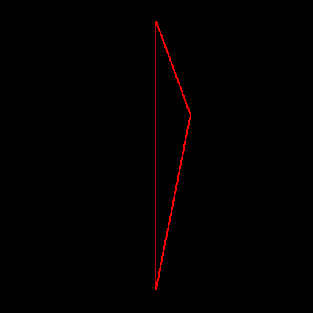
中點偏移規則 – 迭代次數 1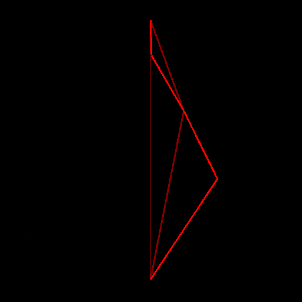
中點偏移規則 – 迭代次數 2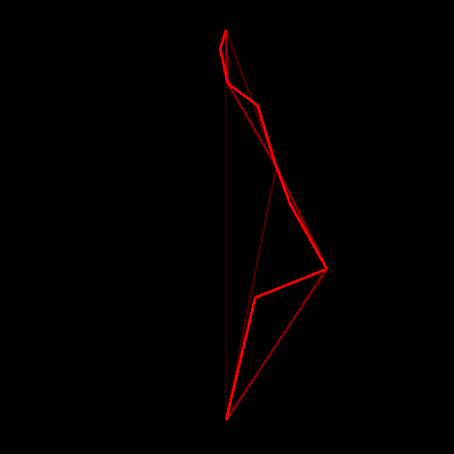
中點偏移規則 – 迭代次數 3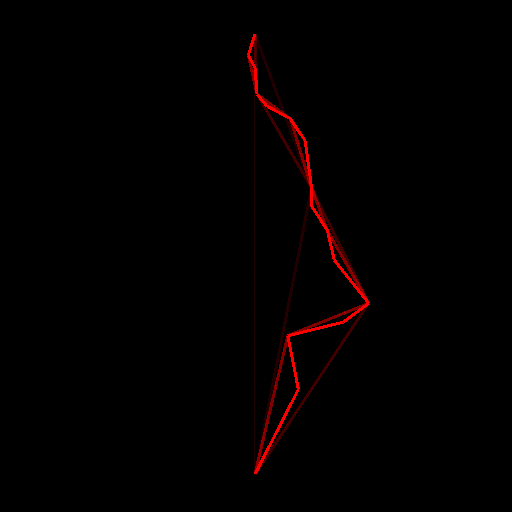
中點偏移規則 – 迭代次數 42. 隨機分支規則
在每次中點位移規則後，會在新中點位置加入一隨機線段，形成閃電效果的分支部分。
隨機分支規則 – 迭代次數 0
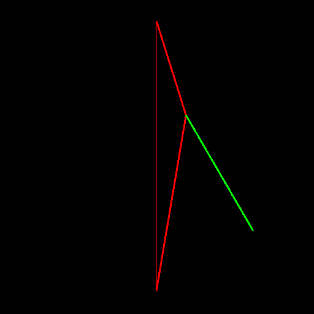
隨機分支規則 – 迭代次數 1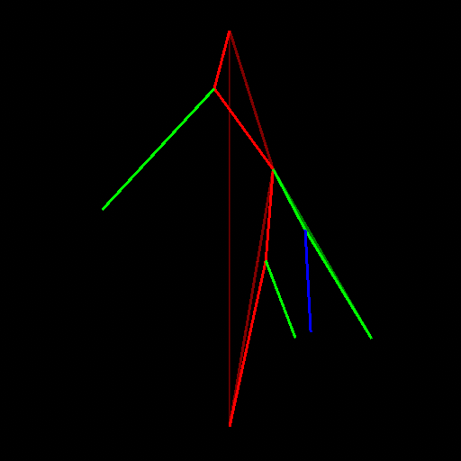
隨機分支規則 – 迭代次數 2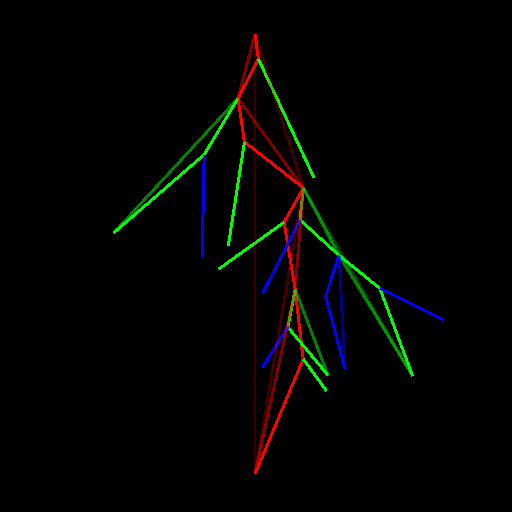
隨機分支規則 – 迭代次數 3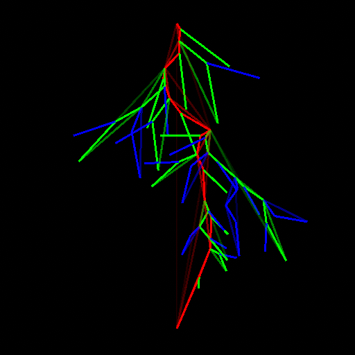
隨機分支規則 – 迭代次數 43. 分支規則優化
觀察 2. 隨機分支規則 步驟可以察覺，若在每一次的迭代過程都產生分支，分支數量會過於發散導致最終的結果變的不可接受。所以在 2. 隨機分支規則 上需要加入一些優化調整來改善這個問題。
a. 機率性產生分支
b. 分支角度的調整
c. 限制每次迭代過程中的分支數量
d. 限制總體的分支數量
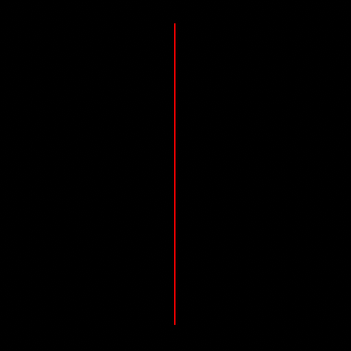
分支規則優化 – 迭代次數 0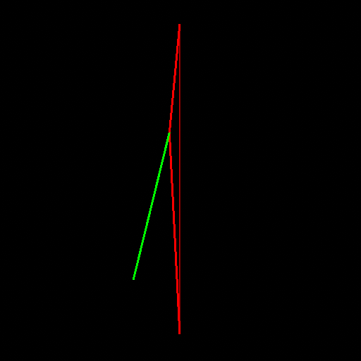
分支規則優化 – 迭代次數 1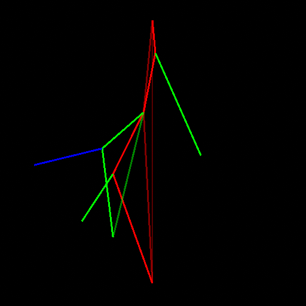
分支規則優化 – 迭代次數 2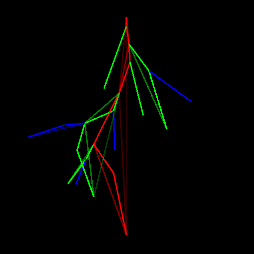
分支規則優化 – 迭代次數 3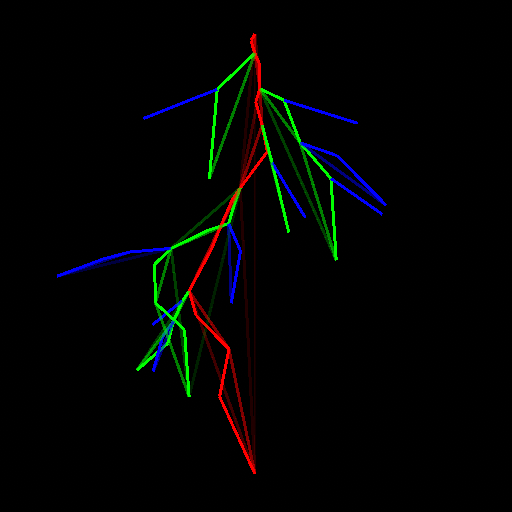
分支規則優化 – 迭代次數 44. 網格生成
到目前為止都還在生成線段的步驟，只有線段沒辦法運用在遊戲之中，這邊簡單的取得每個線段的中心點及長度並利用 GameObject.CreatePrimitive 生成 Quad 網格，最後搭配 GPU Instancing 改善網格過多造成的問題。
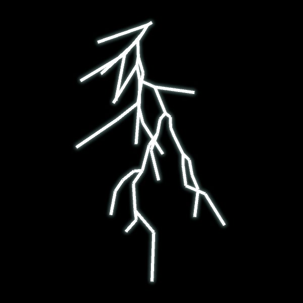
網格生成5. 網格間隔優化
觀察 4. 網格生成 步驟可以發現，產生出的網格會在交界處出現細小間隔，導致閃電整體出現斷斷續續的情況，可以在線段交界處額外生成網格來改善這個問題。
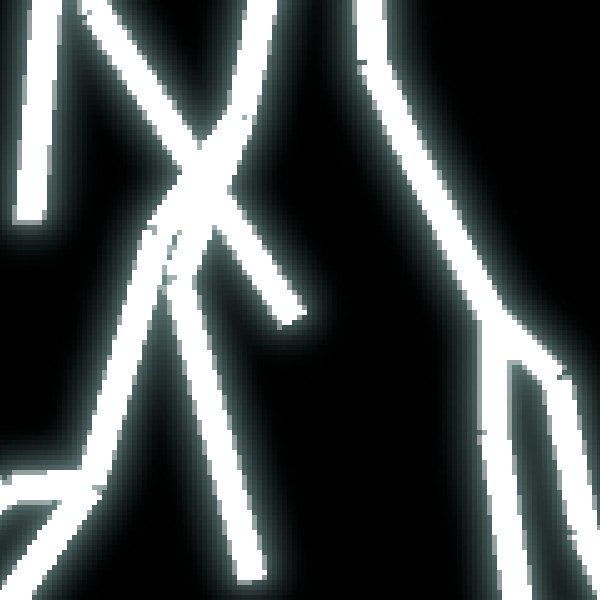
網格間隔優化前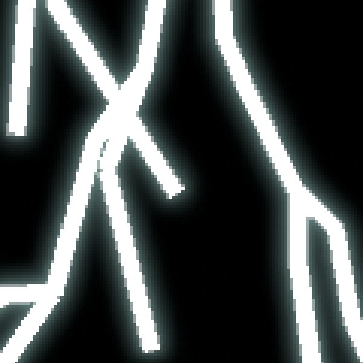
網格間隔優化後6. 閃電效果優化
目前已完成閃電效果的雛形，不過由於產生的網格大小、顏色太過一致，導致效果整體過於單調且乏味，需要在額外進行一些優化調整。
a. 網格大小優化
網格大小優化的主要思路是在迭代過程中紀錄線段間的關係，從而區分出主幹、分支兩部分，並紀錄線段位於分支層級。
主幹部分使用線段與閃電終點的距離作為網格大小調整依據，分支部分使用分支層級作為網格大小調整依據，最後建立一個 Animation Curve 來取得對應的網格大小。
b. 網格顏色優化
同 a. 大小優化 步驟，最後建立一個 Gradient 來取得對應的網格顏色。
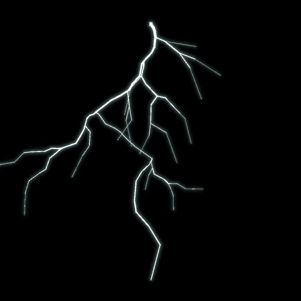
網格大小優化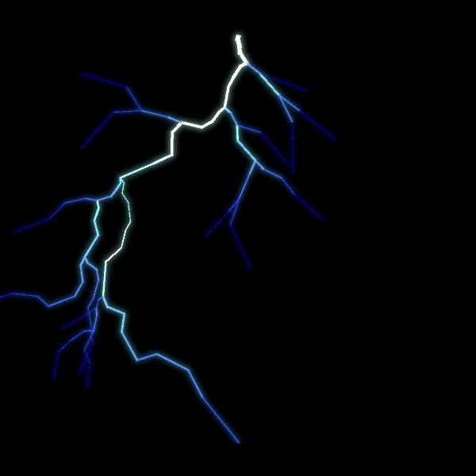
網格顏色優化8. 最終成果
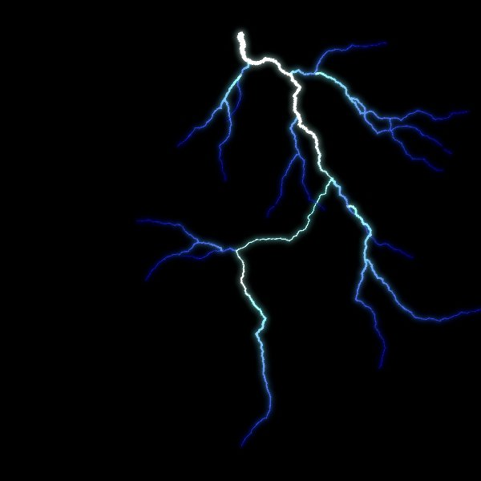
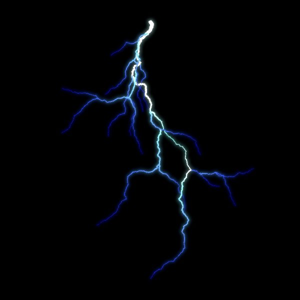
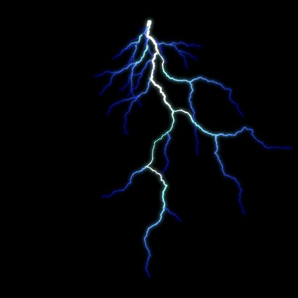
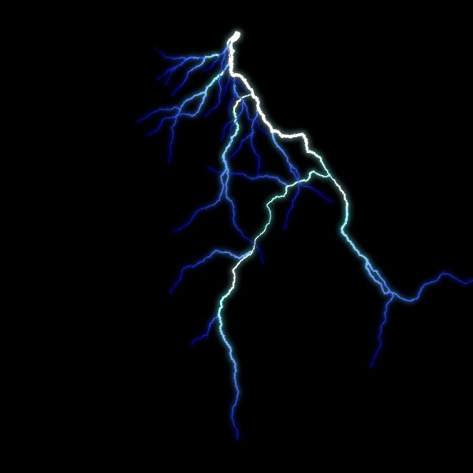
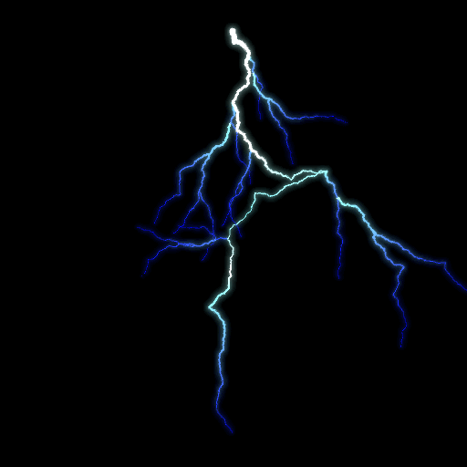
Lindenmayer System 分形圖形學 – 以閃電效果為例（完整原始碼）
Drilian’s House of Game Development – Lightning Bolts
游戏中雨天效果开发：如何打造“最美下雨天”
移动端天气系统–【下雨】效果之【雷电】的实现和分析